Om mig
Jeg studerer til multimediedesigner på Københavns Erhvervsakademi (KEA) og har valgt valgfaget frontend. Jeg trives med udfordringer og ønsker at styrke mine færdigheder inden for JavaScript og webudvikling. Samtidig har jeg en stor interesse for UX/UI og design.
Kreativitet har altid været en stor del af mit liv – både i mit studie og i min fritid. Jeg elsker at arbejde med hænderne og udforske forskellige kreative udtryksformer, men jeg er også fascineret af digitale medier.
I min fritid beskæftiger jeg mig med maleri, tegning, keramik, syning, brodering og grafisk design. Jeg har tidligere solgt mine smykker via Instagram og på markeder. På mit kollegie er jeg en del af krea-komitéen, hvor jeg tilbringer tid i keramik- og syrummet.
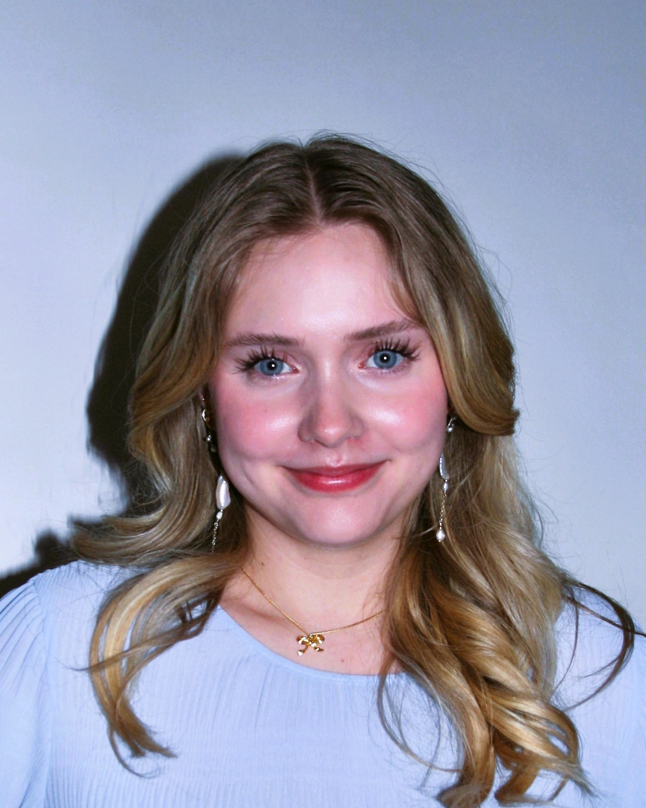
Mine styrker & færdigheder
Tilpasningsdygtig
Jeg trives både med at arbejde selvstændigt og i teams. Jeg tager ansvar for mine egne opgaver og arbejder fokuseret alene, men jeg nyder også at samarbejde og bidrage til et fælles mål. Jeg tilpasser mig forskellige arbejdsdynamikker og observerer altid andre for at vurdere hvordan jeg vil passe bedst ind i et samarbejde.
Kreativ
Jeg har en stærk evne til at generere nye idéer og tænke kreativt. Jeg deler gerne mine tanker og bidrager aktivt med løsninger, der skaber værdi. Jeg er nysgerrig af natur og elsker at eksperimentere for at finde de bedste resultater. Jeg er ikke bange for at lave fejl i mit arbejde, da det kun hjælper mig med at udvikle mig.
Detaljeorienteret
Jeg går op i at levere et produkt af høj kvalitet og har en skarp sans for detaljer. Samtidig arbejder jeg hurtigt og effektivt, især når jeg først mestrer en teknik. Jeg stiller høje krav til mit eget arbejde og stræber efter at skabe løsninger, der fungerer optimalt.
Tekniske færdigheder:
Se nogle af mine projekter her
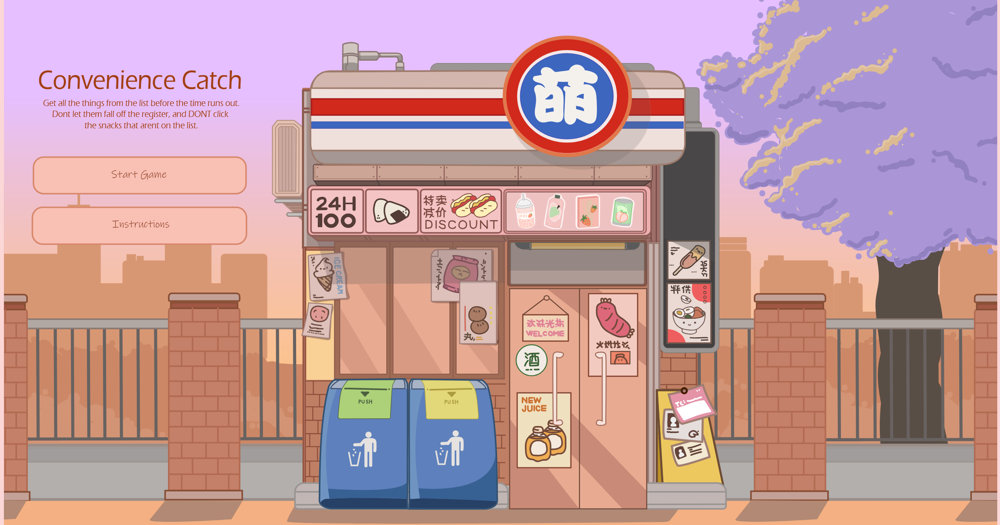
Projekt: Spil fra 1. semester
Et spil inspireret af de japanske kiosker. Design komponenter er alle lavet på Adobe Illustrator. Det var vores første "rigtige" opgave med JS.
Se her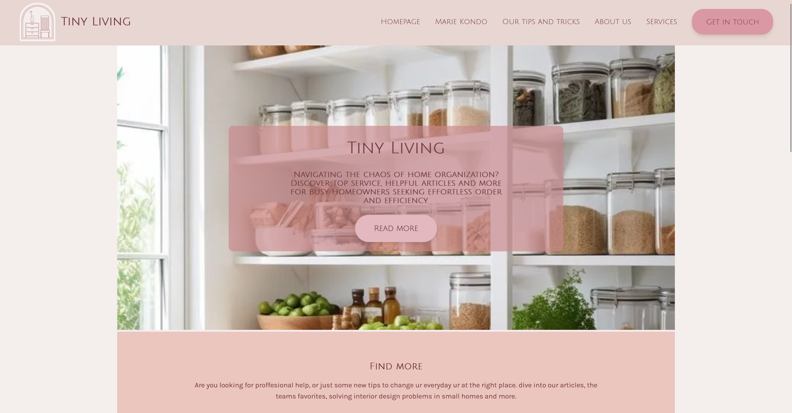
Projekt: Emnesite fra 1. semester
Vi kunne lave en hjemmeside om lige hvad vi ville. Jeg valgte at lave en hjemmeside til at hjælpe mennesker med at organizere deres bolig bedst muligt. Her lærte vi en masse om css styling og responsivitet
Se her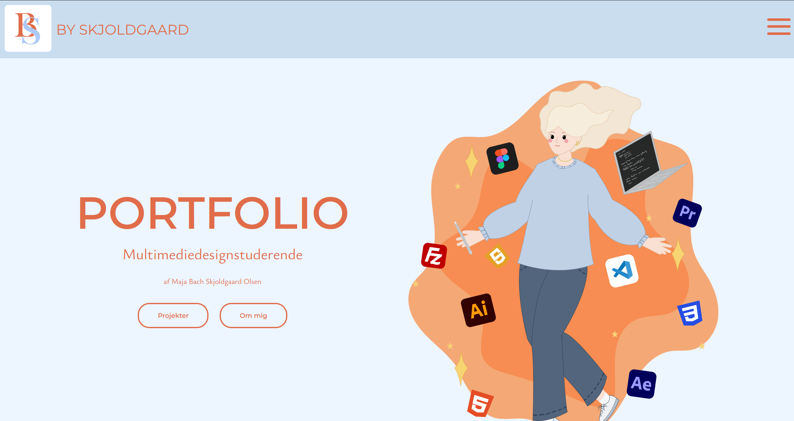
Projekt: Eksamen fra 1. semester
Til eksamen i første semester skulle vi lave en portfolie til at samle alle vores opgaver. Links på portfolioen virker ikke.
Se her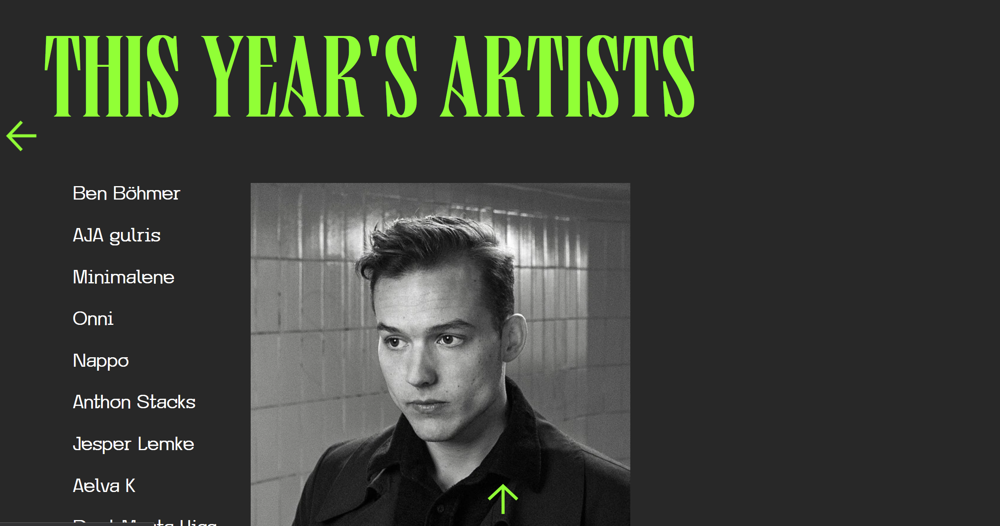
Projekt: Festival site fra 2. semester
Vi skulle vælge mellem to danske festivaller og lave en dynamisk hjemmeside til dem. Det var gruppearbejde og vi valgte techno-festivallen 'Karrusel' Her fik vi lov at eksperimentere med diverse funktioner, f.eks. vise artister ved hover, et klikbart map og mere.
Se her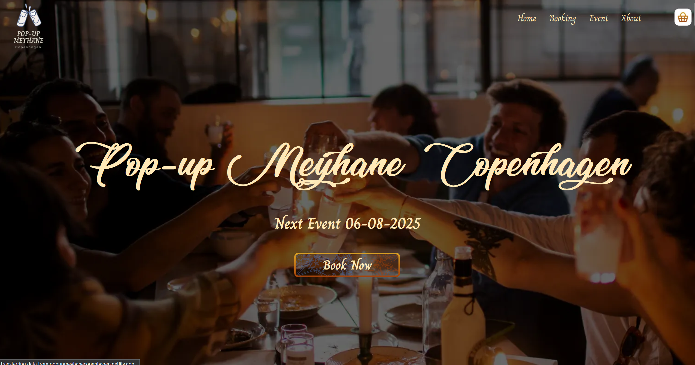
Projekt: Eksamen fra 2. semester
I eksamen på 2 semester skulle vi finde et firma og hjælpe dem med at opgradere eller skabe en ny hjemmeside. Vi endte med at lave en hjemmeside for en tyrkisk event host.
Se her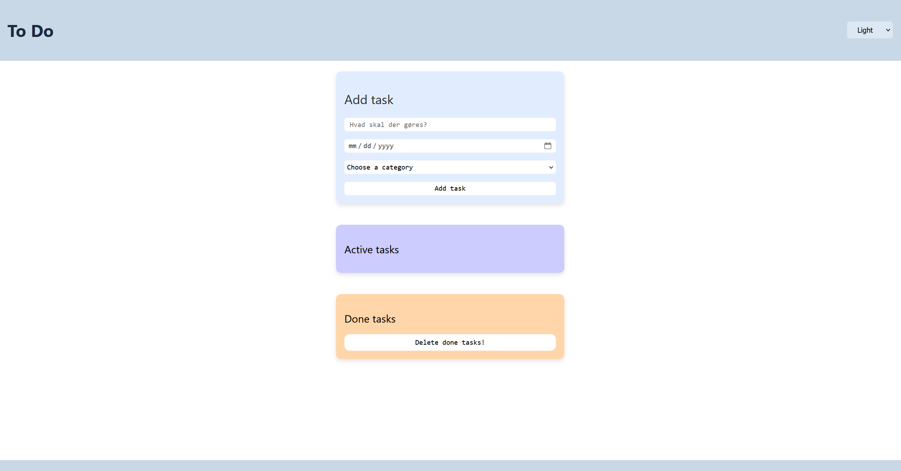
Projekt: ToDo-app fra 3. semester
Det nyeste projekt vi har skabt i frontend. En toDo app med diverse evner. Her lærte vi også at arbejde med data-attributer og hvordan man laver en farve-switcher
Se her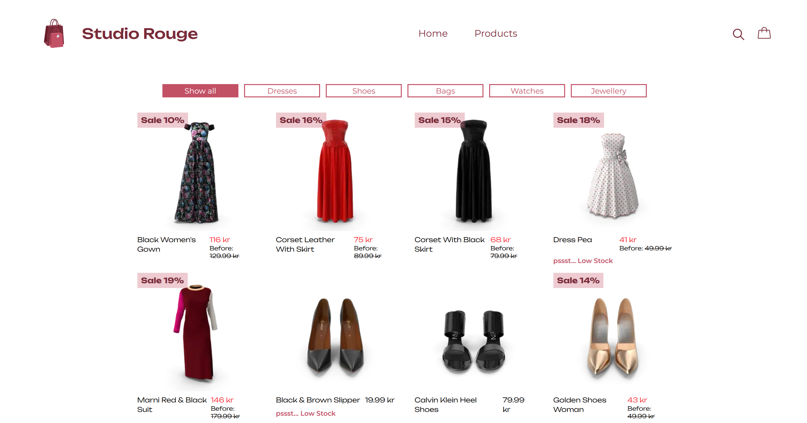
Projekt: Simpel shop fra 3. semester
Vores sidste afleveringen inden vi påbegynder eksamen. Her fik vi love til at udfordre os selv med tailwind og react.
Se herGrafiske design bilag
Jeg har igennem min uddannelser blevet mere trænet i at bruge Adobe illustrator. Her kan ses nogle af de projekter jeg har lavet inden og uden for uddannelsen.
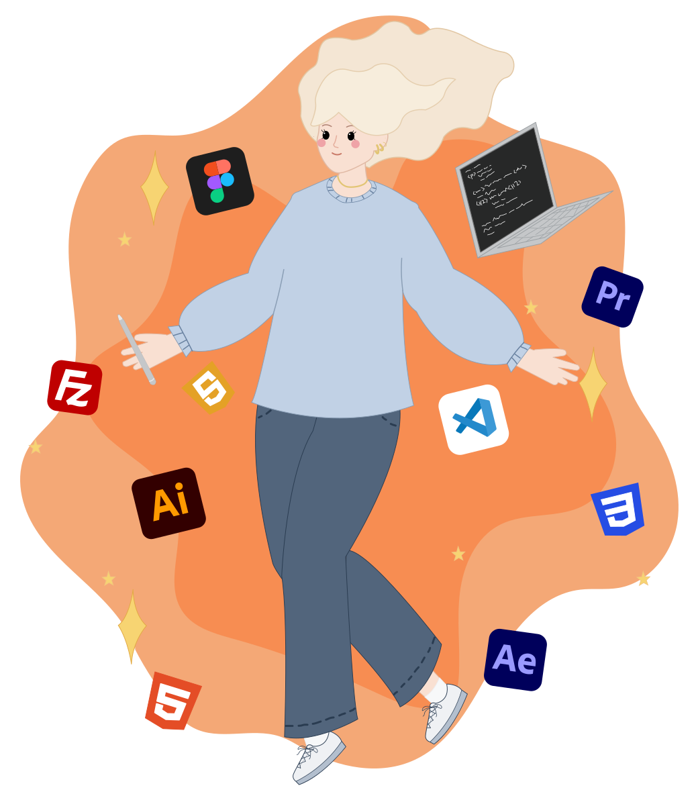
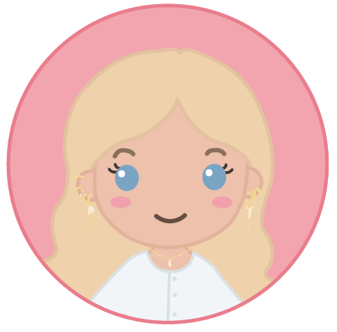
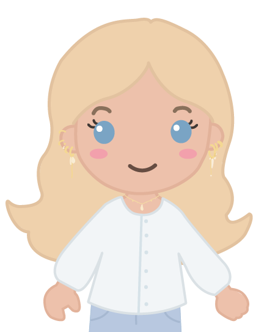
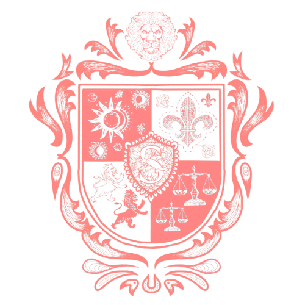
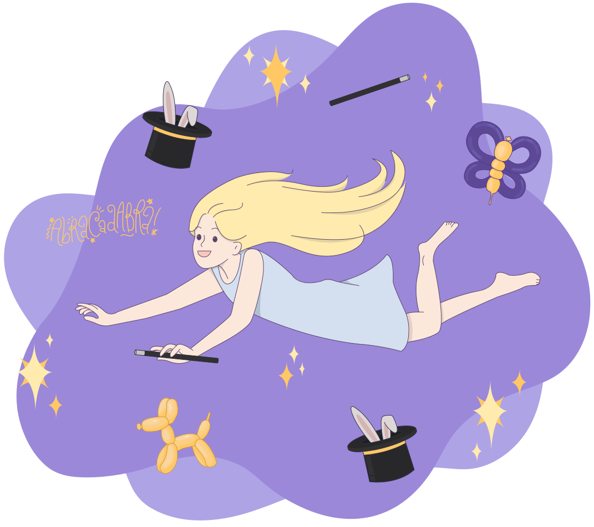
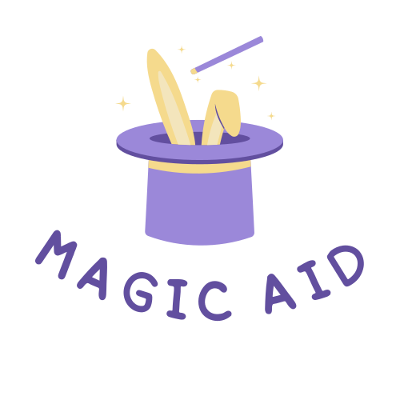
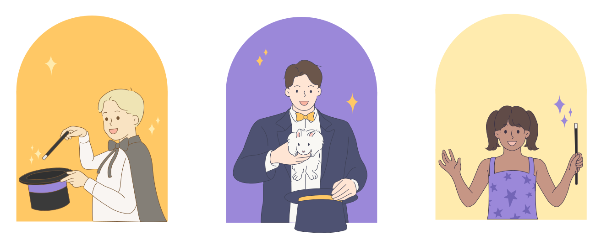
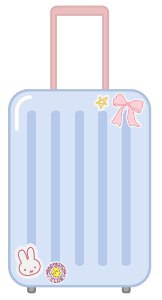
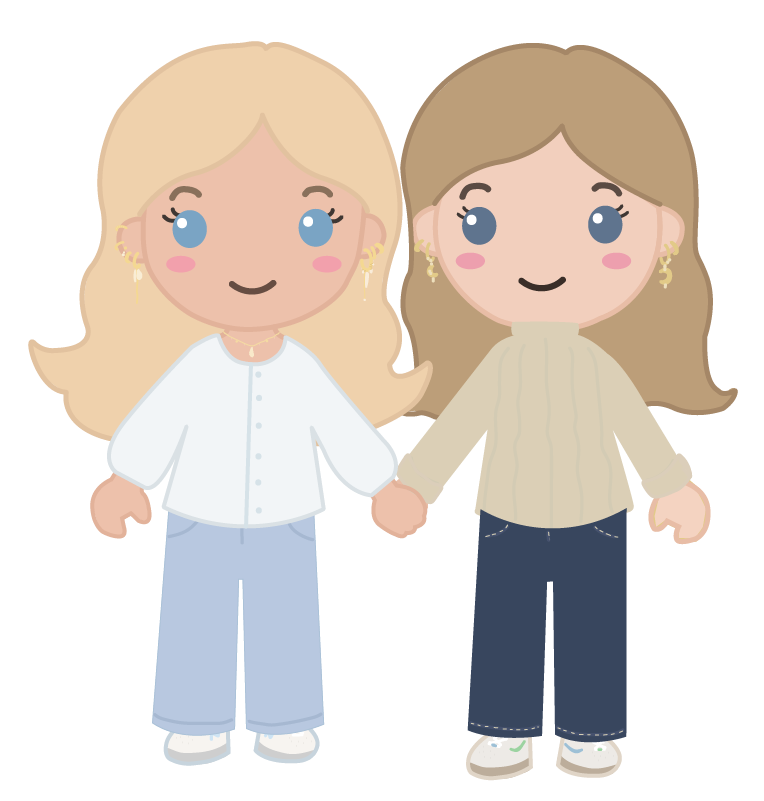
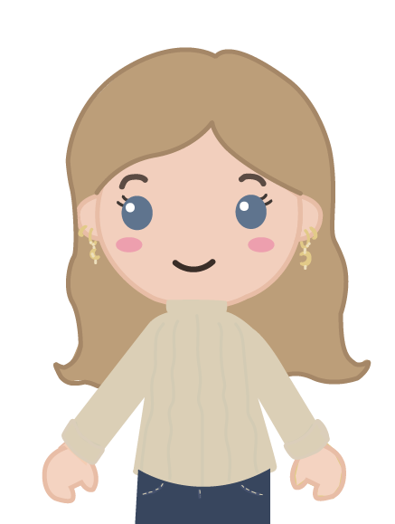
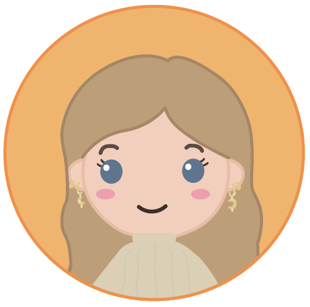

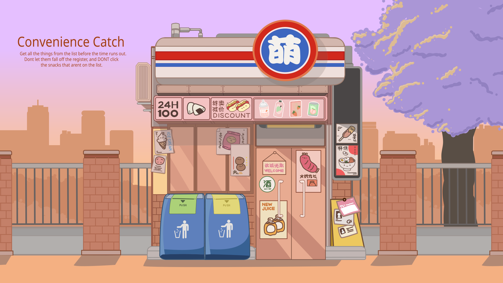
Interesseret eller vil du høre mere?
Github | Netlify | Smykke instagram | Linkedin